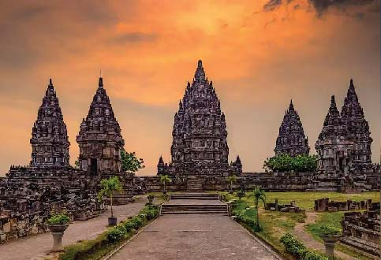
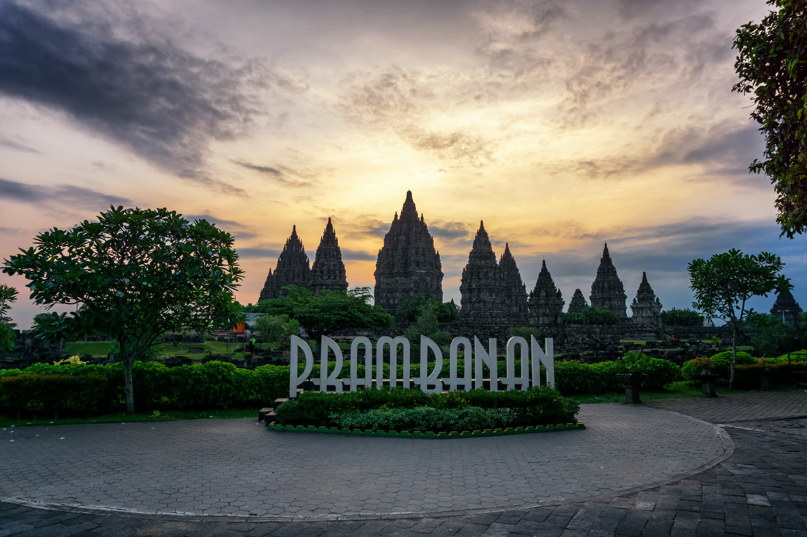
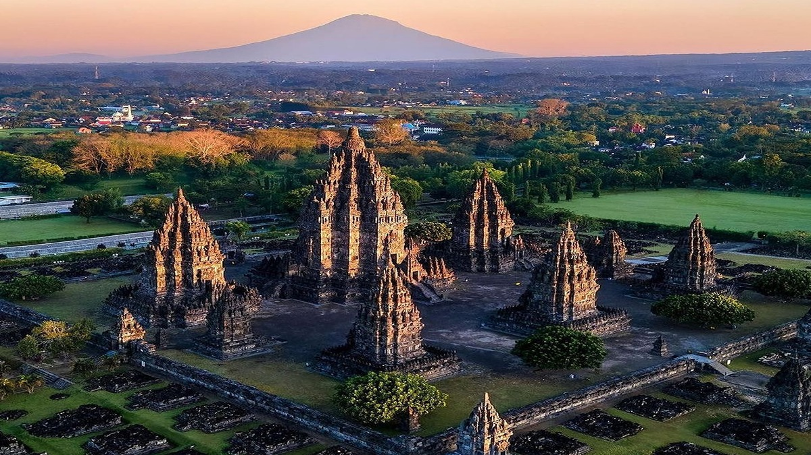
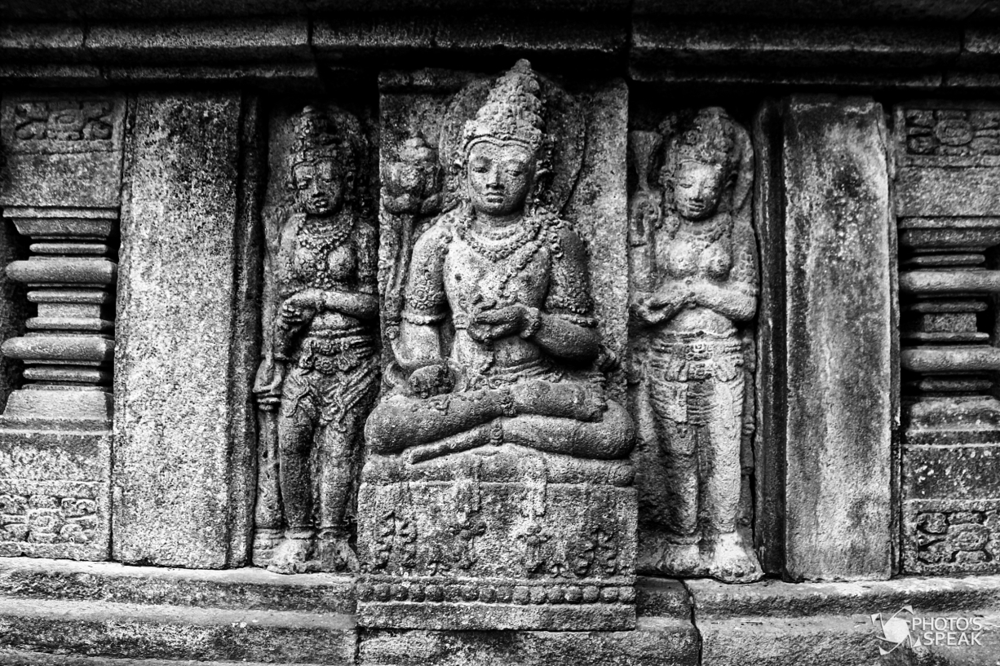
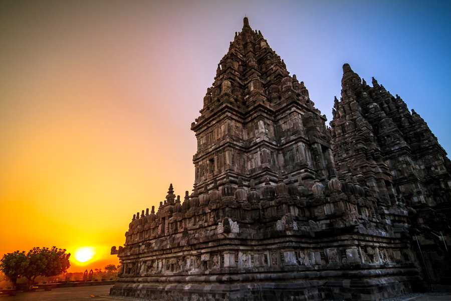
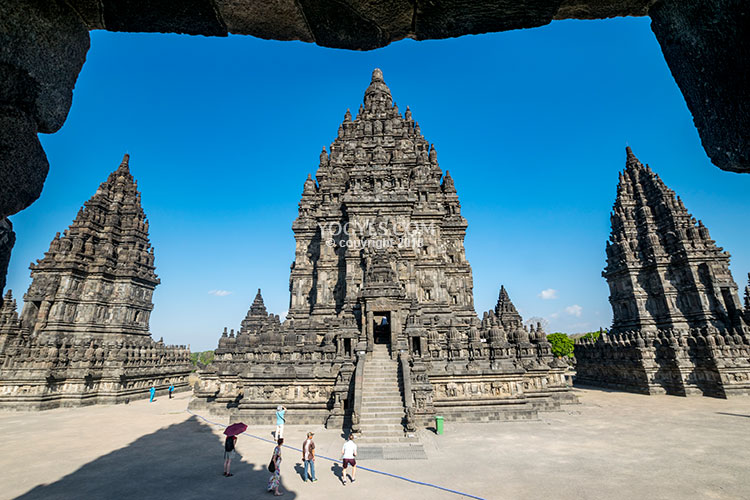
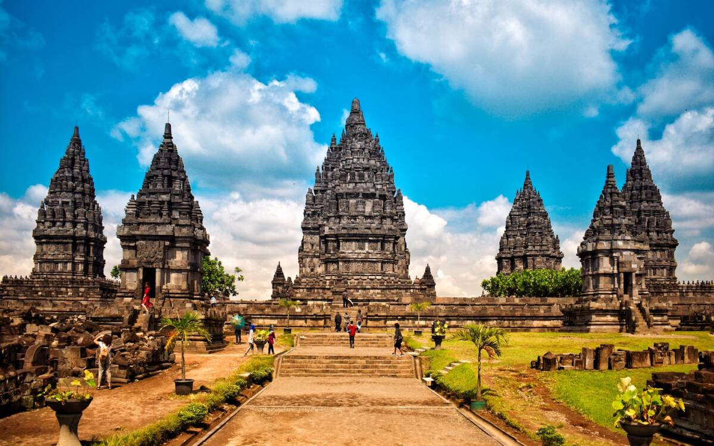

Sejarah Candi Prambanan

Candi Prambanan mulai dibangun sekitar pertengahan abad ke-9 Masehi, tepatnya pada masa pemerintahan Rakai Pikatan dari Kerajaan Mataram Kuno (Kerajaan Medang).
Asal-usul dan Latar Belakang Pembuatan
- Simbol Kejayaan Hindu: Pembangunan candi ini diprakarsai oleh Rakai Pikatan untuk menandai kejayaan Dinasti Sanjaya (pemeluk Hindu Siwa) sekaligus menegaskan kembalinya pusat kekuasaan politik Hindu di Jawa Tengah.
- Tandingan Candi Borobudur: Pembuatannya juga dirancang untuk menandingi kemegahan Candi Borobudur dan Candi Sewu yang dibangun oleh Dinasti Syailendra (pemeluk Buddha).
- Persembahan untuk Trimurti: Secara keagamaan, candi ini dinamai Siwagrha (Rumah Siwa) dan ditujukan untuk menghormati tiga dewa utama dalam ajaran Hindu (Trimurti), yaitu Dewa Siwa (Pencabut/Pemusnah), Dewa Brahma (Pencipta), dan Dewa Wisnu (Pemelihara), dengan Dewa Siwa sebagai dewa utamanya.
Pengembangan dan Prasasti Siwagrha
Berdasarkan Prasasti Siwagrha yang berangka tahun 778 Saka (856 Masehi), kompleks candi ini tidak hanya dibangun oleh Rakai Pikatan saja, tetapi terus diperluas dan disempurnakan oleh raja-raja penerusnya, seperti Raja Lokapala dan Raja Balitung.
Selain sebagai tempat ibadah keagamaan, Candi Prambanan pada masa itu berfungsi sebagai tempat penyelenggaraan upacara-upacara kerajaan dan pusat aktivitas spiritual Kerajaan Mataram Kuno. Pemanfaatan kompleks candi ini berlangsung hingga pusat pemerintahan Mataram Kuno dipindahkan ke Jawa Timur oleh Mpu Sindok pada abad ke-10 akibat letusan Gunung Merapi dan gejolak politik.
Lokasi Candi Prambanan
Candi Prambanan terletak di Kranggan, Bokoharjo, Kecamatan Prambanan, Kabupaten Sleman, Daerah Istimewa Yogyakarta.
Pemesanan Tiket Official
Tertarik untuk berkunjung langsung? Kamu bisa memesan tiket resmi melalui link di bawah ini:
Informasi Kunjungan
| Kategori | Keterangan |
|---|---|
| Jam Buka Pelataran | 06.30 – 17.00 WIB |
| Hari Operasional | Selasa - Minggu (Senin Tutup/Pemeliharaan) |
| Fasilitas Tersedia | Area Parkir, Pemandu Wisata, Toilet, Mushola, Toko Souvenir |
Galeri Foto





